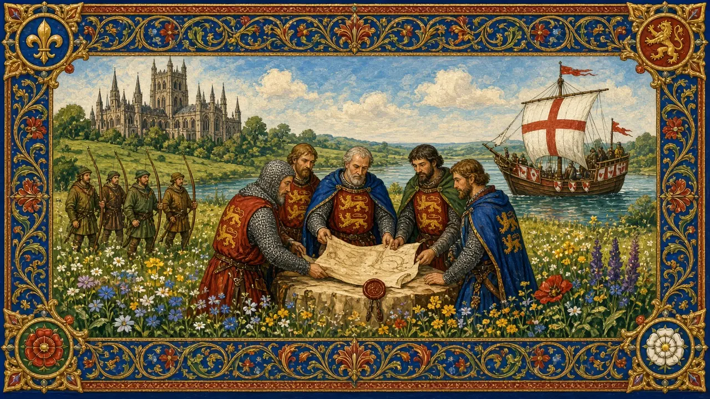
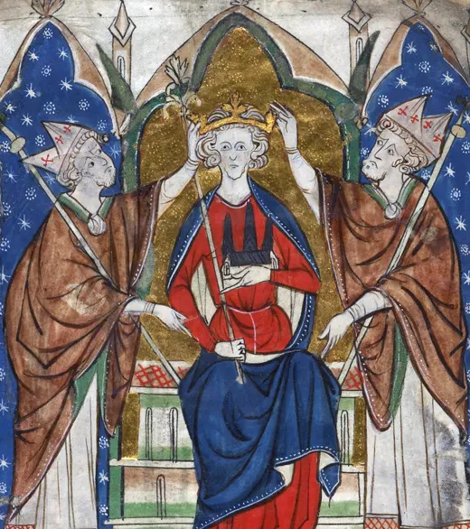

Henry III
A boy king, a 56-year reign, a great abbey — and a rebel called Simon de Montfort.
England · Reigned 1216–1272 · Stop 24 of the odyssey
← Learning from the Past: An English Odyssey · ← King John · Edward I →

- What is a parliament for?
- Should ordinary people help make decisions?
- What can a child ruler do?
The words for today's story
Each new word is hidden in a sentence. Read it aloud and say what you think the bold word means from the rest of the sentence — then reveal it and see how close you were.
Now use them — out loud
- Using any four of these words, predict: what kind of reign do you think this will be — and how might it end?
- Which words belong to power and which to danger? Sort them out loud and say why.


The story, in three parts
Read each part. After it, there's a quick comprehension check (try the questions from memory first), then one thing to discuss.
Part 1 — The boy king
Henry III became king in 1216, aged nine, during civil war. Loyal regents, especially William Marshal, saved his crown and reissued Magna Carta.
As an adult, Henry was devout and loved art. He rebuilt Westminster Abbey in the Gothic style. But his expensive foreign wars and favourites angered the barons.
1. Who saved the young king's crown?
2. What did Henry build?
1. Loyal regents, especially William Marshal.
2. The Gothic Westminster Abbey.
- Why might a child king be easier for barons to control?
Part 2 — Simon de Montfort
In 1258 the barons forced Henry to accept the Provisions of Oxford, which created a council to limit his power. When Henry tried to escape them, his brother-in-law Simon de Montfort led a rebellion and captured the king at Lewes in 1264.
In 1265 Simon summoned a parliament that included not only barons but also knights from the counties and representatives from towns.
1. What were the Provisions of Oxford?
2. What was new about Simon's 1265 parliament?
1. Reforms creating a council to limit royal power.
2. It included representatives from towns as well as knights.
- Why would a rebel want townspeople on his side?
Part 3 — Evesham
Prince Edward escaped and defeated and killed Simon at Evesham in August 1265. Henry ruled until 1272, his 56 years one of the longest reigns in English history.
Simon's parliament became a step towards the House of Commons.
1. How did Simon die?
2. How long did Henry reign?
1. He was killed at Evesham by Prince Edward's army.
2. 56 years.
- Can a rebel lose but still win in the long run?
Grammar — Past Perfect & Sequencing
History is a chain of causes. To show that one thing happened before another in the past, English uses the past perfect.
• Past simple tells the main line: "The Danes attacked at Christmas."
• Past perfect (had + past participle) reaches further back: "By then, Alfred had already escaped into the marshes."
• Signal words: by the time, already, before, after, when, until.
1. Past simple or past perfect?
Complete each sentence about Henry III. Use the word in brackets.
1. Henry (become) king before he was ten.
2. Before Simon rebelled, the barons (force) the Provisions on Henry.
3. After Edward (escape), he defeated Simon.
1. had become
2. had forced
3. had escaped
2. Put the earlier event in the past perfect
1. The abbey (stand) for centuries before Henry rebuilt it.
2. By 1272 Henry (rule) for 56 years.
3. Simon (summon) townsmen before anyone else.
1. had stood
2. had ruled
3. had summoned
Hold on to this — you'll need it in the Speak tab.
Going deeper
Henry's reign shows a growing idea: the king should govern with the advice of the realm. Simon de Montfort, though defeated, is remembered as a founder of parliamentary representation.
- Was Simon a hero or a rebel?
- Why does parliament matter?
- Whose voice is missing in your workplace?

Stop 24 on the journey → winner. In the Major System Palace, 24 is spelled with the sounds n-r, which make winner (a winner holding up a gold cup on a podium).
Picture a winner holding up a golden trophy shaped like the Houses of Parliament — stop 24.
You don't need the system to follow the story — it's simply a hook that lets you walk the whole odyssey, king by king, in order.
Speak
This is the heart of the lesson — do all of it out loud. The timer is there to keep you going: fill the time with detail rather than escaping it.
Tell the story of Henry III in your own words, as if to someone who has never heard of them. Move through the arc: the boy king → Westminster → Simon's rebellion → Evesham and the legacy.
Use today's grammar at least three times, and work in at least five key words (regent, parliament, summon, provision, rebel, burgess, defeat, devout, rebuild, extravagant).
"Everyone affected by a decision should have a say." Agree or disagree.
Tell a story from your own world — work, family, the news — that echoes this reign. Stuck for an idea? Pick one of these and run with it:
- A meeting where you had no voice.
- A long-serving leader.
- A rebel who changed things.
- A beautiful building.
To finish — the bigger questions
- Who are the "burgesses" in your world?
- When should you invite more voices?
- Before you go — from memory: give two sentences about Henry III using Past Perfect and Sequencing, and say what lesson from this reign you could use this week.
← Learning from the Past: An English Odyssey · ← King John · Edward I →